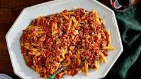

Pasta

Description
This is a meaty treaty carby fun time.
This is my favourite meal that I can make myself. My actual favourite meal
is still this meal, but made by my dad. I guess the proportions are better in his version?
Ingredients
- 1 million grams of dry spaghetti pasta
- 1 massive pack of beef mince
- 1 whole chorizo. Even if it's a huge one, just what it all in
- 1 whole pack of smoked bacon. See above for 'what if it's a huge pack tho?'
- 2 tins chopped tomatoes
- 1 box/jar/tin/serving of passata
- Absolutely loads of garlic. Honestly
- Some worcester sauce
- Olive oil for the pan (still quite a bit though)
- Half a jar of Italian seasoning (or oregano if you don't have that)
Steps
- Heat up the oil in a big pan.
- No - a bigger pan. Did you not see the ingredients??
- Chop up the bacon and chorizo into whatever size you want them
- Add all your meat to the pan, and fry until the mince is brown and the chorizo makes everything orange
- Add garlic and fry for another 4-6 mins
- Add everything else, and then cook on medium for anywhere between 10-40 mins
- 15 mins before the end, boil the kettle and make however much spaghetti you think you want
- ...Interesting! I would have gone with more. Oh well.
- Drain the pasta, and serve with dollops of meaty treaty sauce